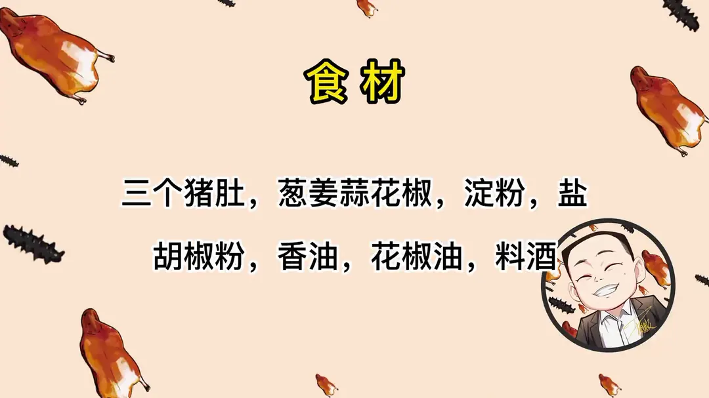
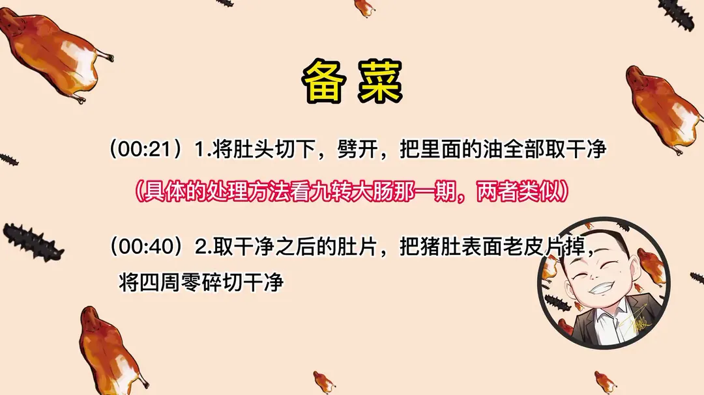
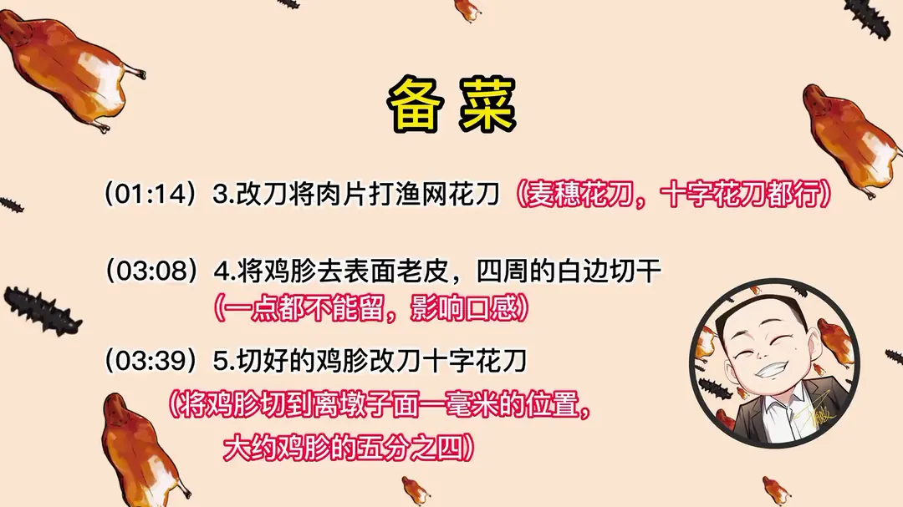
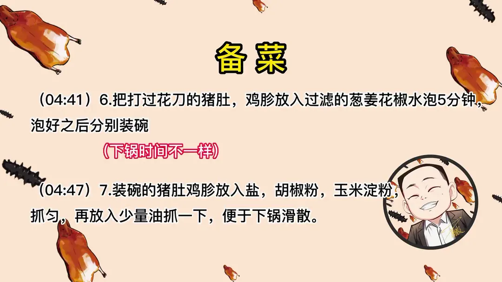
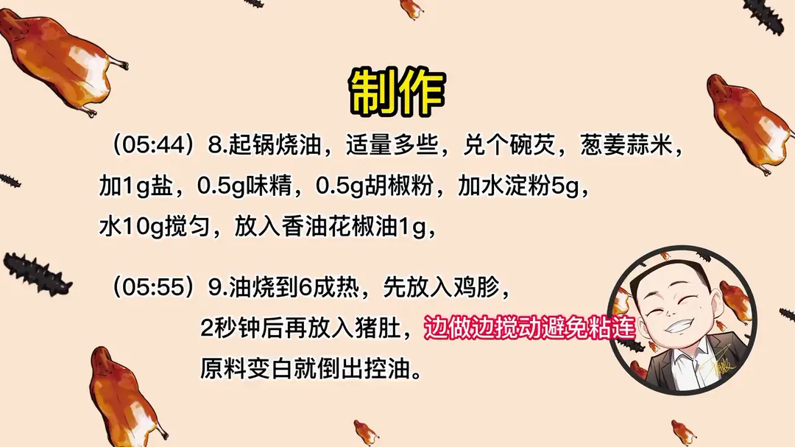

油爆双脆
隋卞一做。主料猪肚三个配鸡胗。关键是肚头去油去老皮、鸡胗切净白边，打十字花刀后用葱姜花椒水泡，六成油温先鸡胗后猪肚，碗芡大火快爆。
原视频：https://www.bilibili.com/video/BV1XT411i7RV
食材
猪肚、鸡胗、葱姜蒜 等 15 样
| 类别 | 用料 | 用量 |
|---|---|---|
| 主料 | 猪肚 | 3 个 |
| 主料 | 鸡胗 | 适量 |
| 泡制 | 葱、姜、蒜、花椒 | 适量 |
| 腌制 | 盐 | 适量 |
| 腌制 | 胡椒粉 | 适量 |
| 腌制 | 玉米淀粉 | 适量 |
| 腌制 | 油 | 少量 |
| 碗芡 | 葱姜蒜米 | 适量 |
| 碗芡 | 盐 | 1g |
| 碗芡 | 味精 | 0.5g |
| 碗芡 | 胡椒粉 | 0.5g |
| 碗芡 | 水淀粉 | 5g |
| 碗芡 | 水 | 10g |
| 碗芡 | 香油、花椒油 | 1g |
| 炒制 | 料酒 | 适量 |
步骤
- 处理猪肚：将肚头切下，劈开，把里面的油全部取干净（具体处理方法看九转大肠那一期，两者类似）；取干净之后的肚片，把猪肚表面老皮片掉，将四周零碎切干净。
- 打花刀：改刀将肉片打渔网花刀，麦穗花刀、十字花刀都行。
- 处理鸡胗：将鸡胗去表面老皮，四周的白边切干（一点都不能留，影响口感）；切好的鸡胗改刀十字花刀，切到离墩子面一毫米的位置，大约鸡胗的五分之四。
- 泡水：把打过花刀的猪肚、鸡胗放入过滤的葱姜花椒水泡 5 分钟，泡好之后分别装碗，因为下锅时间不一样。
- 上浆：装碗的猪肚、鸡胗放入盐、胡椒粉、玉米淀粉，抓匀，再放入少量油抓一下，便于下锅滑散。
- 兑碗芡：起锅烧油，油适量多一些；兑个碗芡：葱姜蒜米，加 1g 盐、0.5g 味精、0.5g 胡椒粉，加水淀粉 5g、水 10g 搅匀，放入香油花椒油 1g。
- 滑油：油烧到 6 成热，先放入鸡胗，2 秒钟后再放入猪肚，边做边搅动避免粘连，原料变白就倒出控油。
- 回锅爆炒：锅中留少量底油，所有原料回锅，烹料酒，倒入碗芡，大火迅速翻炒均匀出锅。
小贴士
- 鸡胗四周的白边要切干净，一点都不能留，否则影响口感。
- 鸡胗改刀十字花刀，切到离墩子面一毫米、约鸡胗的五分之四深。
- 猪肚和鸡胗下锅时间不一样，泡好后分别装碗；先下鸡胗，2 秒后再下猪肚。
讲解要点
难度：★★★★★（刀工要精、调味要准、火候要一秒钟恰到好处，缺一样都不成）
为什么这么做
- 三个猪肚只取一小片肚头：肚头最厚最脆，其余部分发老，先拿去留作芫爆肚丝；三个肚才出一个菜，成本高。
- 肚片一点油一点老皮都不能留：油和那层老皮嚼不烂，是这道菜「入口败兴」的根源。
- 鸡胗白边切净：白边是筋膜，留一点就影响脆嫩。
- 花刀切到五分之四深：刀口越细越深，热油越容易渗透、热力越能迅速侵入，几秒就卷成花，这正是「火候菜」的依据。
- 猪肚打渔网花刀：肚仁薄，打荔枝、麦穗花刀卷起来反而不明显，渔网（十字交叉）才立得住。
- 先泡葱姜花椒水 5 分钟：脏器味用香料水泡出去，再上浆，滑油时才不腥。
- 薄淀粉后封油：薄浆让原料滑嫩，封一层油一防干、二防下锅粘连。
- 先鸡胗、2 秒后再下猪肚：两样熟的快慢不同，一起下不是肚老就是胗不熟；变白即熟，立刻控油。
- 碗芡提前兑好、回锅一次成型：爆炒只有十几秒，来不及调芡；盐、味精、胡椒粉、水淀粉、香油花椒油一起下锅才裹得匀。
容易翻车
- 鸡胗花刀切到离墩子面一毫米，切断了就散。
- 油温六成热，原料下锅变白就出锅，多停几秒就变韧。
- 回锅爆炒时把锅斜着挡、把料往中间拢，别让料滑到锅边糊掉。
- 这道菜要趁烫吃，温度降下来脆感就没了。
热评补充
- 各家油温不一样：有 7–8 成的，有 4–5 成、4 成的，关键不是几成，而是食材多少、热油多少、火力大小和过油时间的长短。
原片尾卡





原片文案
AI 字幕校准稿
在家要把这菜练会了，我跟你说，你秒杀一切饭庄子。真以为我不会做鲁菜的？如果中国菜里要体现刀工的只有几道菜，那今天做这道菜就是火候菜的巅峰：油爆双脆。这是一整个的猪肚，做油爆双脆只能用这个肚头，一般三个猪肚才能出一道菜，剩下的肚留着做芫爆肚丝。
然后一劈两开，把上面的油全部取干净，干干净净的，这道菜一般人不敢做，一点油都不能有。洗干净之后，从这条开始，贴着下边那层皮往前推，后边那层一定不能要，有一点都影响口感。慢慢来，别着急，跟着感觉走，一点点来。我们能用的只有这一小片，其他地方有零碎的就可以扔掉了。
然后改刀，这种菜还挺考验刀工的。不论打渔网花刀、蓑衣花刀，还是麦穗花刀、荔枝花刀都可以。今天我们打一个渔网花刀，按住一头往前推，切到三分之二深度成渔网状。因为猪肚的肚仁比较薄，你要打那种荔枝花刀、麦穗花刀，它卷了之后反而不那么明显，没有腰花那么明显。第一遍如果是竖着切，第二遍就得横着下，就是十字交叉。
这个脆的是鸡胗，没买鸭胗，就是鸡胗。把这个边上去一去，边上一定要修干净，一点都不能留。改刀打十字花刀，切到离墩子面大约一毫米的位置就可以了，深度得是五分之四。横着切完再竖着切。这活儿不快是真不行。咱要去外面馆子吃这菜，不提前两天，人家不会给你做。就咱这整个北京城，不会超过十家馆子在售；这道菜你花钱能吃上，甭管多少钱，已经很不容易了。
拿一个盆，葱姜花椒水再过滤一下，是不是不好往外挑？一会儿把打过花刀的全放在里面，让它泡个味，泡 5 分钟。泡好之后我们分别装碗，你要分开装，是因为他俩下锅的时间不一样。来点盐、胡椒粉腌个底味儿，再来薄薄的一层玉米淀粉。猪肚仁和鸡胗上完浆后用油封一下，防止它干，而且一会儿下锅滑油的时候很容易散开。
兑个碗芡，加点料酒，油温怎么也得六成热，先下鸡胗，再下猪肚，边做边扒拉，别让它粘了。原料变白就熟了，这么快，回锅，烹料酒，下碗汁，出锅。把锅挡着点，别让它往边上溜。点缀一下，油爆双脆。
咱们正常来说这个菜上来之后得紧吃，不能等，凉了吃就不是这意思了。就是这味儿，这个比锅里的嫩。真是火候菜，好快啊，我感觉从你下锅到出锅也就一分钟。那个咸鲜味道跟葱姜蒜、醋的味道还挺香的，里面也没有异味。在家要把这菜练会了，我跟你说，你秒杀一切饭庄子。北京肯定不会超过十家做这个菜，这个菜无论从火候、从刀工，少哪样都不成。调味要准，刀工要精，火候拿捏要恰到好处，锅里油温的掌握是最难的。